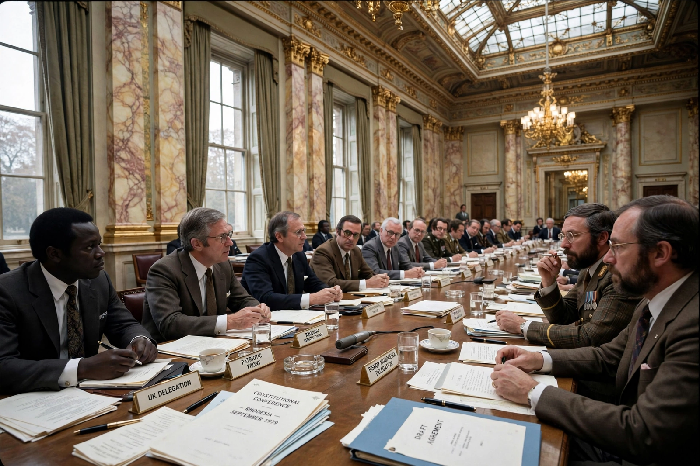

| Lancaster House Agreement | |
 The Lancaster House conference, 1979 | |
| Signed | 21 December 1979 |
|---|---|
| Location | Lancaster House, London, United Kingdom |
| Parties | United Kingdom; Zimbabwe Rhodesia government (Abel Muzorewa); Patriotic Front (Robert Mugabe, Joshua Nkomo) |
| Chair | Lord Carrington, British Foreign Secretary |
| Outcome | Ceasefire; new constitution; free elections; legal independence of Zimbabwe (18 April 1980) |
The Lancaster House Agreement, signed on 21 December 1979 at Lancaster House in London, was the settlement that ended the Rhodesian Bush War and brought about the internationally recognised independence of Zimbabwe. It was negotiated at a constitutional conference chaired by the British foreign secretary, Lord Carrington, between the British government, the "internal settlement" government of Bishop Abel Muzorewa in Salisbury, and the Patriotic Front guerrilla alliance of Robert Mugabe's ZANU and Joshua Nkomo's ZAPU.
Rhodesia's white-minority government had unilaterally declared independence (UDI) from Britain in 1965 under Ian Smith. Britain never recognised UDI, and a liberation war escalated through the 1970s. An "internal settlement" in 1978–79 created "Zimbabwe Rhodesia" under Muzorewa but excluded the guerrilla movements and won no international recognition, prompting Britain's new Conservative government under Margaret Thatcher to convene an all-parties conference in September 1979.
Elections in February–March 1980 produced a decisive victory for Mugabe's ZANU-PF, which won 57 of the 80 common-roll seats. Zimbabwe became legally independent on 18 April 1980, with Mugabe as prime minister. The land and reserved-seat clauses remained controversial for decades and shaped Zimbabwe's later land-reform conflicts.